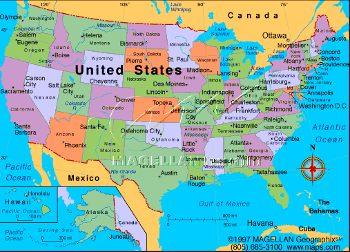

Indigenous signs for cities in the United States (of America)
 David Bar-Tzur
David Bar-Tzur

Flag: World flag database.
Map: Maps.com - "search" for country, then "Digital Map Graphics".
For a quick, interesting resource for facts about this and other countries,
try Mystic Planet - The New Age directory of Planet Earth.
 BYUFanatic. (2007, November 22).
BYUFanatic. (2007, November 22).